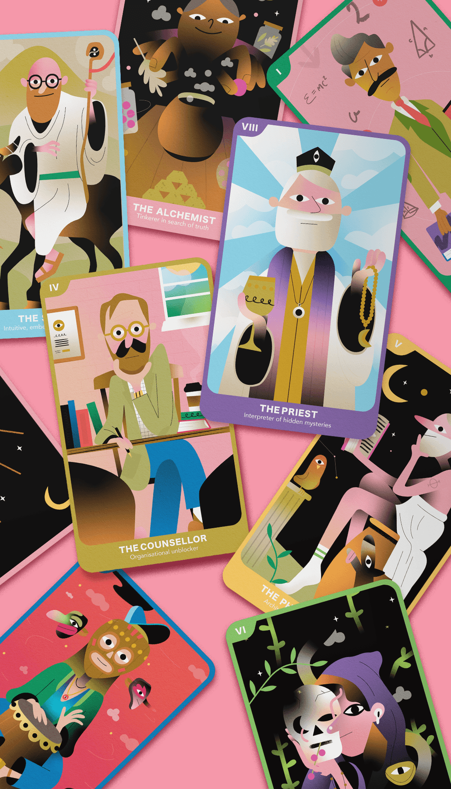
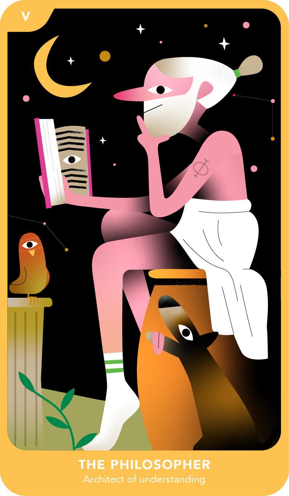
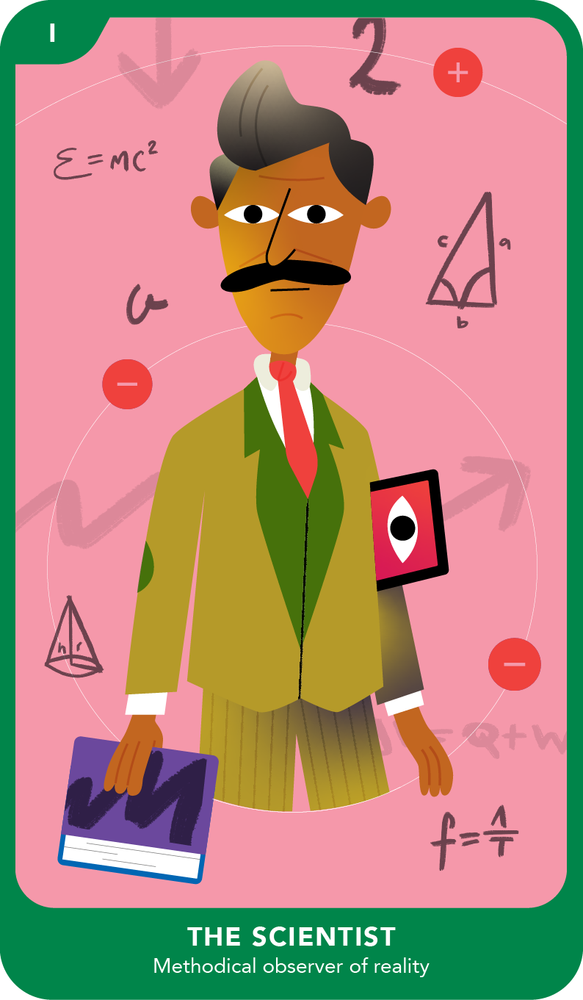
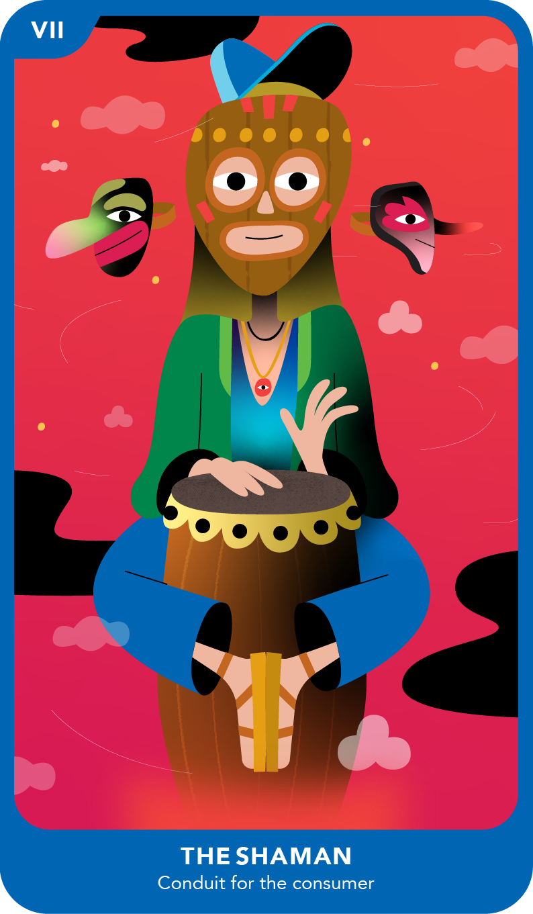
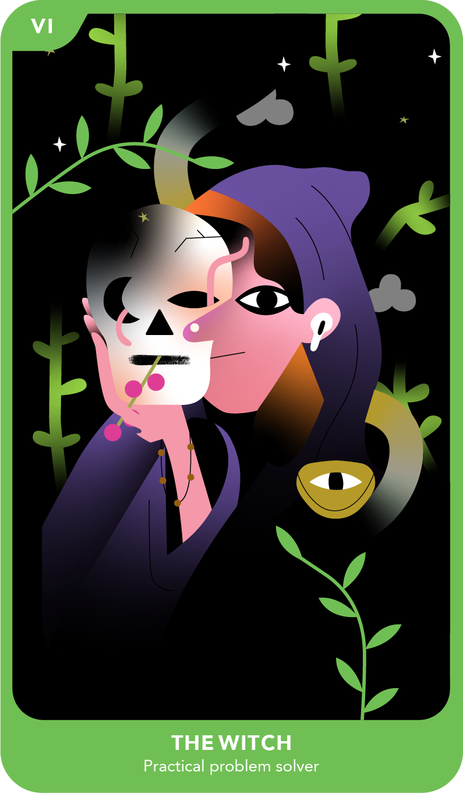
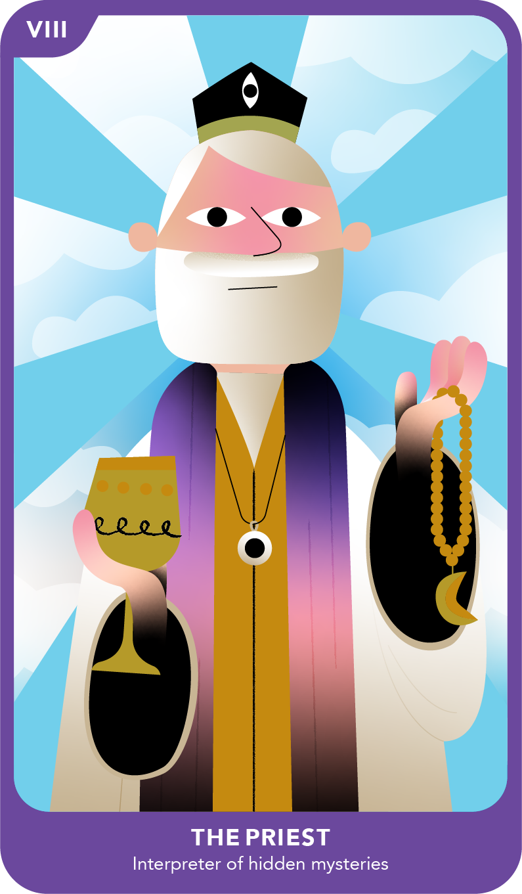
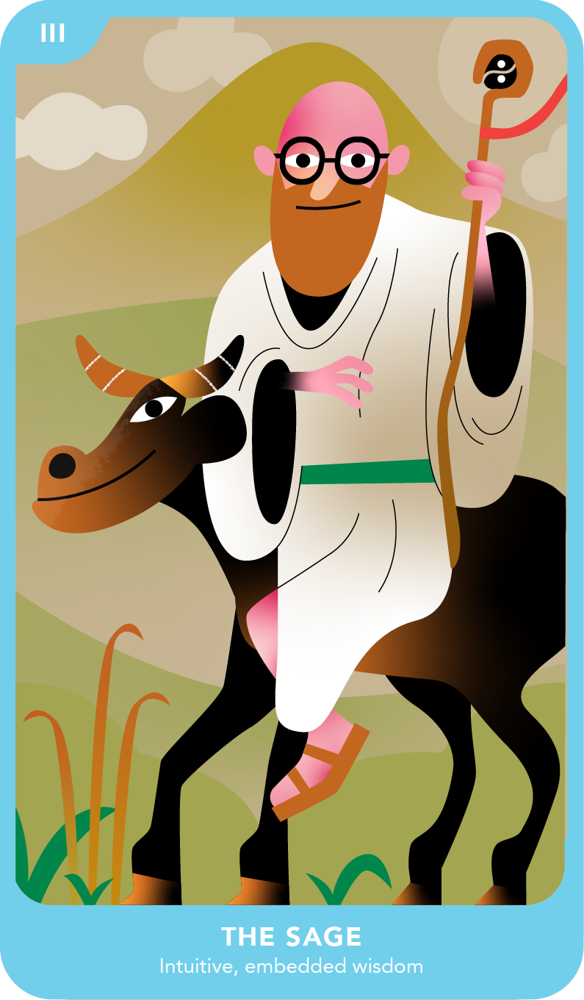
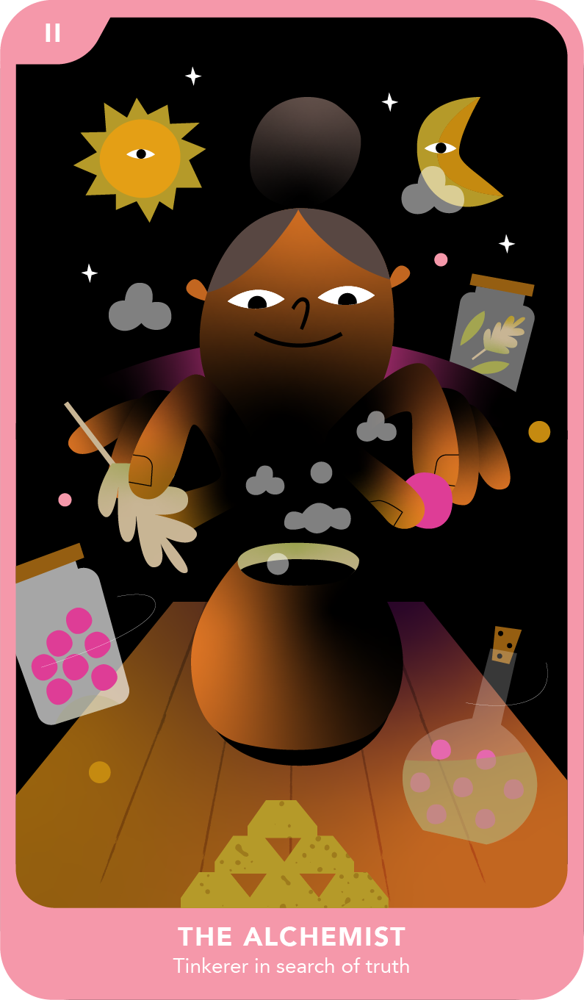
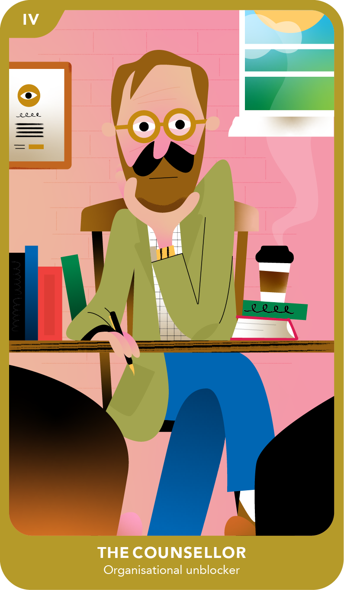

Tarot Cards
Tarot Cards: commercial illustration and motion work by Alex Tait.









Tarot Cards: commercial illustration and motion work by Alex Tait.








I'm an illustrator and motion designer based between Bath and London, making bold character work for brands alongside a personal series of dark, gradient creatures. My work has been commissioned by Apple, Google, Spotify and Adidas, spanning broadcast, social, packaging and print.